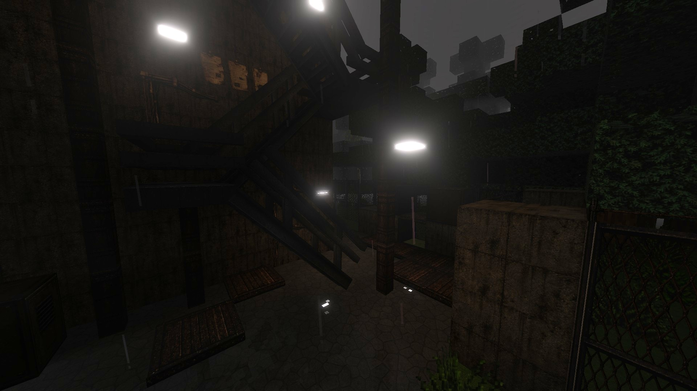
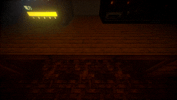
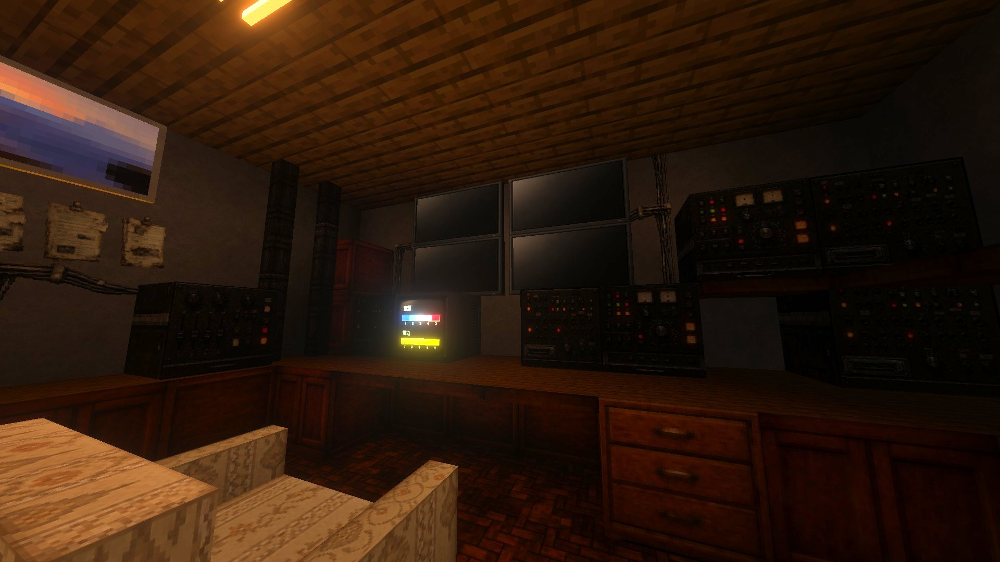

MONITORING IN PROGRESS
干渉嵐が来る夜、モニターの前から離れられない。
ここは、自治体の避難所ではない。もとからこの土地に住んでいた者たちが、有事に備えて構えた小さな観測所だ。高次干渉嵐が接近する夜、逃げ遅れた人を匿うこともある——ただし、匿えるのはほんの数人分。
プレイヤーは監視役として、複数のモニターに映る室内を見張り続ける。石炭を焚いて室温を保ち、電力を絶やさず、そして——モニターの向こうに、あるはずのない異常が映っていないかを。
見逃せば、こちらに気づかれる。
4台のモニターを切り替えながら異常を探し、見つけたら報告する。誤報告は電力を消費する。
ボイラーに石炭をくべ、電力復旧作業をこなす。どちらも切らすと、状況は悪化する一方。
予兆に気づいたら、テーブルの下に隠れてやり過ごせ。間に合わなければ——。
操作するのは1人。他の参加者は操作主の視界をそのまま共有して、一緒に見張ることができる。



v0.1.1 — マルチプレイ対応版。.mcworldファイルです。
v0.1.1